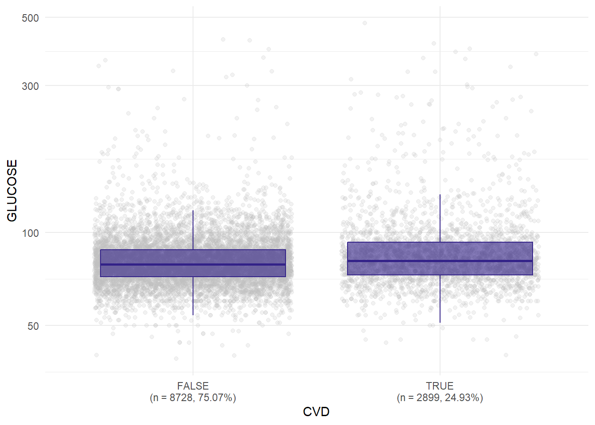
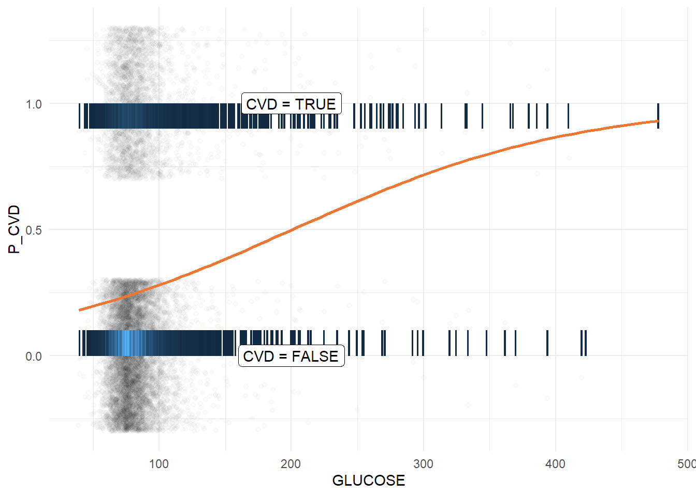
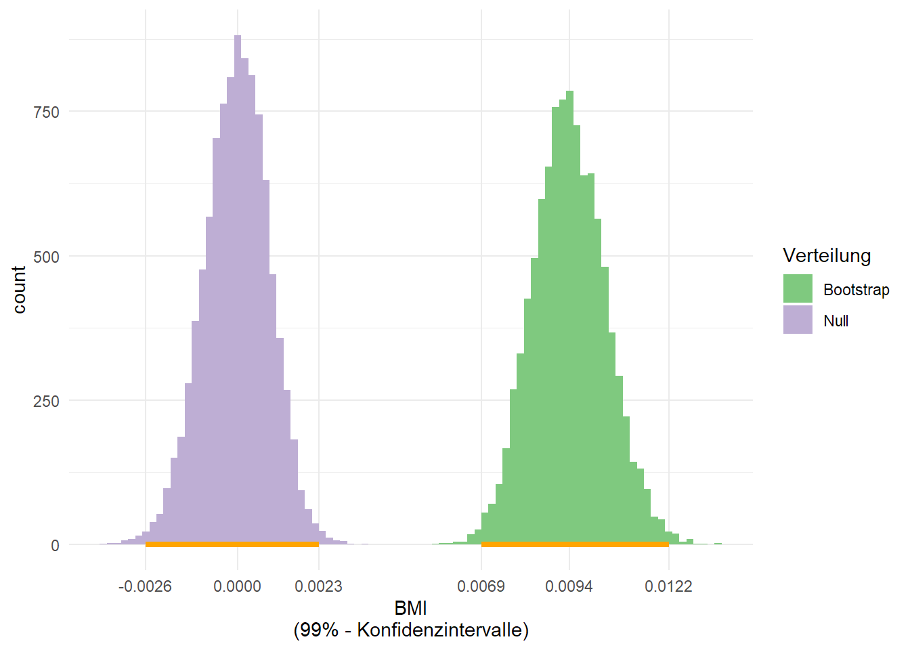

library(tidyverse)
library(ggExtra)
library(patchwork)
library(mosaic)
library(glue)
library(svglite)Analyse der Framingham Heart Study
Der Datensatz
Wir haben die Daten aus dem R-Paket riskCommunicator exportiert.
Die originale Erläuterung der Variablen aus dem Ursprungspaket befindet sich im Anhang.
Vorbereitung der R-Umgebung
Wir laden die für unsere Untersuchung erforderlichen Pakete:
Wir definieren einige globale Variablen zur Kontrolle des Bootstrapping-Verfahrens:
const.seed <- 69420
boot.rep <- 10000Zusätzlich definieren wir Helferfunktionen zum Export unserer Plots für die Präsentation:
do_save <- function(name, plot, widthFactor, heightFactor, format, ...) {
fname <- glue("{name}_{widthFactor}x{heightFactor}.{format}")
width <- 7 * widthFactor
height <- 7 * heightFactor
ggsave(
fname,
plot = plot,
path = "plots",
width = width,
height = height,
bg = "transparent",
...
)
}
hhr_save <- function(name, plot, format = "svg", ...) {
heightFactor = 1
for (widthFactor in c(1, 2)) {
do_save(name, plot, widthFactor, heightFactor, format)
}
}Daten laden und vorbereiten
Die Daten liegen in ext.csv. Wir definieren die Spaltentypen explizit (sonst interpretiert R alles als String) und benennen die Level des Attributs SEX um:
full_data <- read_csv2(
"ext.csv",
col_types = list(
RANDID = col_integer(),
SEX = col_factor(),
TOTCHOL = col_integer(),
AGE = col_integer(),
SYSBP = col_number(),
DIABP = col_number(),
CURSMOKE = col_logical(),
CIGPDAY = col_integer(),
BMI = col_number(),
DIABETES = col_logical(),
BPMEDS = col_logical(),
HEARTRTE = col_integer(),
GLUCOSE = col_integer(),
EDUC = col_factor(ordered = TRUE),
PREVCHD = col_logical(),
PREVAP = col_logical(),
PREVMI = col_logical(),
PREVSTRK = col_logical(),
PREVHYP = col_logical(),
TIME = col_integer(),
PERIOD = col_factor(ordered = TRUE),
HDLC = col_integer(),
LDLC = col_integer(),
DEATH = col_logical(),
ANGINA = col_logical(),
HOSPMI = col_logical(),
MI_FCHD = col_logical(),
ANYCHD = col_logical(),
STROKE = col_logical(),
CVD = col_logical(),
HYPERTEN = col_logical(),
TIMEAP = col_integer(),
TIMEMI = col_integer(),
TIMEMIFC = col_integer(),
TIMECHD = col_integer(),
TIMESTRK = col_integer(),
TIMECVD = col_integer(),
TIMEDTH = col_integer(),
TIMEHYP = col_integer()
)
) |> mutate(SEX = forcats::fct_recode(SEX, "MALE" = "1", "FEMALE" = "2"))Wir untersuchen, ob das Laden der Daten problemfrei funktioniert hat und werfen einen Blick auf Struktur und Inhalt des Datensatzes:
problems(full_data)
str(full_data)tibble [11,627 × 39] (S3: tbl_df/tbl/data.frame)
$ RANDID : int [1:11627] 2448 2448 6238 6238 6238 9428 9428 10552 10552 11252 ...
$ SEX : Factor w/ 2 levels "MALE","FEMALE": 1 1 2 2 2 1 1 2 2 2 ...
$ TOTCHOL : int [1:11627] 195 209 250 260 237 245 283 225 232 285 ...
$ AGE : int [1:11627] 39 52 46 52 58 48 54 61 67 46 ...
$ SYSBP : num [1:11627] 106 121 121 105 108 ...
$ DIABP : num [1:11627] 70 66 81 69.5 66 80 89 95 109 84 ...
$ CURSMOKE: logi [1:11627] FALSE FALSE FALSE FALSE FALSE TRUE ...
$ CIGPDAY : int [1:11627] 0 0 0 0 0 20 30 30 20 23 ...
$ BMI : num [1:11627] 27 NA 28.7 29.4 28.5 ...
$ DIABETES: logi [1:11627] FALSE FALSE FALSE FALSE FALSE FALSE ...
$ BPMEDS : logi [1:11627] FALSE FALSE FALSE FALSE FALSE FALSE ...
$ HEARTRTE: int [1:11627] 80 69 95 80 80 75 75 65 60 85 ...
$ GLUCOSE : int [1:11627] 77 92 76 86 71 70 87 103 89 85 ...
$ EDUC : Factor w/ 4 levels "4","2","1","3": 1 1 2 2 2 3 3 4 4 4 ...
$ PREVCHD : logi [1:11627] FALSE FALSE FALSE FALSE FALSE FALSE ...
$ PREVAP : logi [1:11627] FALSE FALSE FALSE FALSE FALSE FALSE ...
$ PREVMI : logi [1:11627] FALSE FALSE FALSE FALSE FALSE FALSE ...
$ PREVSTRK: logi [1:11627] FALSE FALSE FALSE FALSE FALSE FALSE ...
$ PREVHYP : logi [1:11627] FALSE FALSE FALSE FALSE FALSE FALSE ...
$ TIME : int [1:11627] 0 4628 0 2156 4344 0 2199 0 1977 0 ...
$ PERIOD : Factor w/ 3 levels "1","3","2": 1 2 1 3 2 1 3 1 3 1 ...
$ HDLC : int [1:11627] NA 31 NA NA 54 NA NA NA NA NA ...
$ LDLC : int [1:11627] NA 178 NA NA 141 NA NA NA NA NA ...
$ DEATH : logi [1:11627] FALSE FALSE FALSE FALSE FALSE FALSE ...
$ ANGINA : logi [1:11627] FALSE FALSE FALSE FALSE FALSE FALSE ...
$ HOSPMI : logi [1:11627] TRUE TRUE FALSE FALSE FALSE FALSE ...
$ MI_FCHD : logi [1:11627] TRUE TRUE FALSE FALSE FALSE FALSE ...
$ ANYCHD : logi [1:11627] TRUE TRUE FALSE FALSE FALSE FALSE ...
$ STROKE : logi [1:11627] FALSE FALSE FALSE FALSE FALSE FALSE ...
$ CVD : logi [1:11627] TRUE TRUE FALSE FALSE FALSE FALSE ...
$ HYPERTEN: logi [1:11627] FALSE FALSE FALSE FALSE FALSE FALSE ...
$ TIMEAP : int [1:11627] 8766 8766 8766 8766 8766 8766 8766 2956 2956 8766 ...
$ TIMEMI : int [1:11627] 6438 6438 8766 8766 8766 8766 8766 2956 2956 8766 ...
$ TIMEMIFC: int [1:11627] 6438 6438 8766 8766 8766 8766 8766 2956 2956 8766 ...
$ TIMECHD : int [1:11627] 6438 6438 8766 8766 8766 8766 8766 2956 2956 8766 ...
$ TIMESTRK: int [1:11627] 8766 8766 8766 8766 8766 8766 8766 2089 2089 8766 ...
$ TIMECVD : int [1:11627] 6438 6438 8766 8766 8766 8766 8766 2089 2089 8766 ...
$ TIMEDTH : int [1:11627] 8766 8766 8766 8766 8766 8766 8766 2956 2956 8766 ...
$ TIMEHYP : int [1:11627] 8766 8766 8766 8766 8766 8766 8766 0 0 4285 ...full_data# A tibble: 11,627 × 39
RANDID SEX TOTCHOL AGE SYSBP DIABP CURSMOKE CIGPDAY BMI DIABE…¹ BPMEDS
<int> <fct> <int> <int> <dbl> <dbl> <lgl> <int> <dbl> <lgl> <lgl>
1 2448 MALE 195 39 106 70 FALSE 0 27.0 FALSE FALSE
2 2448 MALE 209 52 121 66 FALSE 0 NA FALSE FALSE
3 6238 FEMALE 250 46 121 81 FALSE 0 28.7 FALSE FALSE
4 6238 FEMALE 260 52 105 69.5 FALSE 0 29.4 FALSE FALSE
5 6238 FEMALE 237 58 108 66 FALSE 0 28.5 FALSE FALSE
6 9428 MALE 245 48 128. 80 TRUE 20 25.3 FALSE FALSE
7 9428 MALE 283 54 141 89 TRUE 30 25.3 FALSE FALSE
8 10552 FEMALE 225 61 150 95 TRUE 30 28.6 FALSE FALSE
9 10552 FEMALE 232 67 183 109 TRUE 20 30.2 FALSE FALSE
10 11252 FEMALE 285 46 130 84 TRUE 23 23.1 FALSE FALSE
# … with 11,617 more rows, 28 more variables: HEARTRTE <int>, GLUCOSE <int>,
# EDUC <fct>, PREVCHD <lgl>, PREVAP <lgl>, PREVMI <lgl>, PREVSTRK <lgl>,
# PREVHYP <lgl>, TIME <int>, PERIOD <fct>, HDLC <int>, LDLC <int>,
# DEATH <lgl>, ANGINA <lgl>, HOSPMI <lgl>, MI_FCHD <lgl>, ANYCHD <lgl>,
# STROKE <lgl>, CVD <lgl>, HYPERTEN <lgl>, TIMEAP <int>, TIMEMI <int>,
# TIMEMIFC <int>, TIMECHD <int>, TIMESTRK <int>, TIMECVD <int>,
# TIMEDTH <int>, TIMEHYP <int>, and abbreviated variable name ¹DIABETESNachdem die Daten nun in full_data vorliegen, beginnen wir mit der Untersuchung.
Analyse Frage 1: Führt ein hoher BMI zu erhöhtem systolischem Blutdruck?
\(H_{0}\): Die unabhängige Variable BMI hat keinen Einfluss auf die abhängige Variable SYSBP
\(H_{A}\): Die unabhängige Variable BMI hat einen (positiven oder negativen) Einfluss auf die abhängige Variable SYSBP
Wir kopieren full_data für die weitere Analyse:
hyp1_data <- full_dataExplorative Datenanalyse
Lagemaße des BMI:
favstats(~ BMI, data=hyp1_data) min Q1 median Q3 max mean sd n missing
14.43 23.095 25.48 28.07 56.8 25.87735 4.10264 11575 52Lagemaße des SYSBP:
favstats(~ SYSBP, data=hyp1_data) min Q1 median Q3 max mean sd n missing
83.5 120 132 149 295 136.3241 22.79862 11627 0BMI und systolischer Blutdruck sind numerische Variablen, wir schauen uns also ihre Verteilung an:
bmi_hgram <- hyp1_data |>
ggplot(aes(x=BMI)) +
geom_histogram(fill="#4477aa", color="#4477aa", binwidth=1, alpha=0.8) +
theme_minimal()
# TODO: 2discuss: Histogramm oder KDE?
# ggtitle("Verteilung des Body Mass Index") +
# geom_histogram(fill="#4477aa", color="#4477aa", binwidth=1, alpha=0.8) +
# geom_density(fill="#4477aa", color="#4477aa", alpha=0.8) +
sysbp_hgram_colours <- c('1'='#228833', '5'='#ee6677')
sysbp_hgram <- hyp1_data |>
ggplot(aes(x=SYSBP)) +
geom_histogram(aes(colour='5', fill='5'), binwidth=5, alpha=0.8) +
geom_histogram(aes(colour='1', fill='1'), binwidth=1, alpha=0.8) +
scale_colour_manual(values=sysbp_hgram_colours,
breaks=NULL) +
scale_fill_manual(values=sysbp_hgram_colours,
name='binwidth') +
theme_minimal()
bmi_sysbp_dist <- bmi_hgram / sysbp_hgram
hhr_save("hyp1_bmi_sysbp_dist", bmi_sysbp_dist)
bmi_sysbp_distAuffällig: “Runde” Blutdruckwerte - insbesondere 110, 120 und 130 - sind überrepräsentiert.
Wir visualisieren den Zusammenhang zwischen BMI und systolischem Blutdruck:
# Konturplot (2D-Kerndichteschätzung) mit transparenter Punktwolke in der richtigen Farbe...
bmi_sysbp_scatter_contour <- ggplot(hyp1_data, aes(x=BMI, y=SYSBP) ) +
geom_point(alpha=0.4, colour="#7a0177") +
stat_density_2d(aes(fill = after_stat(level)), geom = "polygon", alpha=0.8) +
scale_fill_distiller(palette="RdPu", direction=-1) +
theme_minimal() +
theme(
legend.position='none'
)
# ...mit Verteilung an den Rändern
bmi_sysbp_scatter_contour_marg <- ggMarginal(
bmi_sysbp_scatter_contour,
type="histogram",
xparams=list(colour="#4477aa", fill="#4477aa", alpha=0.8, binwidth=1),
yparams=list(colour="#ee6677", fill="#ee6677", alpha=0.8, binwidth=5)
)Warning: Removed 52 rows containing non-finite values (`stat_density2d()`).
Removed 52 rows containing non-finite values (`stat_density2d()`).Warning: Removed 52 rows containing missing values (`geom_point()`).hhr_save("hyp1_bmi_sysbp_scatter_contour_marg", bmi_sysbp_scatter_contour_marg)
bmi_sysbp_scatter_contour_margLineare Regression
Wir untersuchen den Zusammenhang zwischen BMI und SYSBP mittels einer linearen Regression:
hyp1_linreg <- lm(SYSBP ~ BMI, data=hyp1_data)
summary(hyp1_linreg)
Call:
lm(formula = SYSBP ~ BMI, data = hyp1_data)
Residuals:
Min 1Q Median 3Q Max
-58.571 -15.668 -3.879 12.092 143.333
Coefficients:
Estimate Std. Error t value Pr(>|t|)
(Intercept) 96.79744 1.29995 74.46 <2e-16 ***
BMI 1.52640 0.04962 30.77 <2e-16 ***
---
Signif. codes: 0 '***' 0.001 '**' 0.01 '*' 0.05 '.' 0.1 ' ' 1
Residual standard error: 21.9 on 11573 degrees of freedom
(52 Beobachtungen als fehlend gelöscht)
Multiple R-squared: 0.0756, Adjusted R-squared: 0.07552
F-statistic: 946.5 on 1 and 11573 DF, p-value: < 2.2e-16Wir zeichnen die Regressionsgerade in das Streudiagramm ein:
bmi_sysbp_scatter_regr <- bmi_sysbp_scatter_contour +
geom_abline(color='#228833',
size = 1,
slope=coef(hyp1_linreg)['BMI'],
intercept=coef(hyp1_linreg)['(Intercept)'])
hhr_save("hyp1_bmi_sysbp_scatter_regr", bmi_sysbp_scatter_regr)
bmi_sysbp_scatter_regrBootstrapping
Wir berechnen eine Bootstrapverteilung:
set.seed(const.seed) # Reproduzierbarkeit
hyp1_boot <- do(boot.rep)* lm(SYSBP ~ BMI, data=resample(hyp1_data))
summary(hyp1_boot) Intercept BMI sigma r.squared
Min. : 91.69 Min. :1.304 Min. :21.26 Min. :0.05616
1st Qu.: 95.86 1st Qu.:1.490 1st Qu.:21.76 1st Qu.:0.07204
Median : 96.81 Median :1.526 Median :21.89 Median :0.07559
Mean : 96.79 Mean :1.527 Mean :21.90 Mean :0.07572
3rd Qu.: 97.73 3rd Qu.:1.562 3rd Qu.:22.03 3rd Qu.:0.07930
Max. :102.34 Max. :1.722 Max. :22.63 Max. :0.09741
F numdf dendf .row .index
Min. : 689.0 Min. :1 Min. :11541 Min. :1 Min. : 1
1st Qu.: 898.4 1st Qu.:1 1st Qu.:11568 1st Qu.:1 1st Qu.: 2501
Median : 946.3 Median :1 Median :11573 Median :1 Median : 5000
Mean : 948.6 Mean :1 Mean :11573 Mean :1 Mean : 5000
3rd Qu.: 996.8 3rd Qu.:1 3rd Qu.:11578 3rd Qu.:1 3rd Qu.: 7500
Max. :1247.4 Max. :1 Max. :11597 Max. :1 Max. :10000 Wir ermitteln das Konfidenzintervall (\(\alpha = 1\%\)) der Bootstrapverteilung:
hyp1_bootconf <- qdata(~ BMI, data=hyp1_boot, p=c(0.005, 0.995))
hyp1_bootconf 0.5% 99.5%
1.385746 1.665754 Wir berechnen eine Nullverteilung:
# Nullverteilung
set.seed(const.seed) # Reproduzierbarkeit
hyp1_nulldist <- do(boot.rep) * lm(SYSBP ~ shuffle(BMI), data=resample(hyp1_data))
summary(hyp1_nulldist) Intercept BMI sigma r.squared
Min. :130.9 Min. :-0.1814117 Min. :22.02 Min. :0.000e+00
1st Qu.:135.4 1st Qu.:-0.0366416 1st Qu.:22.66 1st Qu.:9.373e-06
Median :136.4 Median :-0.0016080 Median :22.80 Median :4.094e-05
Mean :136.3 Mean :-0.0008292 Mean :22.80 Mean :8.778e-05
3rd Qu.:137.3 3rd Qu.: 0.0343467 3rd Qu.:22.93 3rd Qu.:1.155e-04
Max. :141.1 Max. : 0.1944764 Max. :23.47 Max. :1.211e-03
F numdf dendf .row .index
Min. : 0.0000 Min. :1 Min. :11544 Min. :1 Min. : 1
1st Qu.: 0.1085 1st Qu.:1 1st Qu.:11568 1st Qu.:1 1st Qu.: 2501
Median : 0.4742 Median :1 Median :11573 Median :1 Median : 5000
Mean : 1.0161 Mean :1 Mean :11573 Mean :1 Mean : 5000
3rd Qu.: 1.3367 3rd Qu.:1 3rd Qu.:11578 3rd Qu.:1 3rd Qu.: 7500
Max. :14.0473 Max. :1 Max. :11598 Max. :1 Max. :10000 Wir ermitteln das Konfidenzintervall (\(\alpha = 1\%\)) der Nullverteilung:
hyp1_nullconf <- qdata(~ BMI, data=hyp1_nulldist, p=c(0.005, 0.995))
hyp1_nullconf 0.5% 99.5%
-0.1318827 0.1354917 Anschließend visualisieren wir die Verteilungen:
hyp1_boot$Verteilung <- "Bootstrap"
hyp1_nulldist$Verteilung <- "Null"
hyp1_nullconf_lower <- round(as.numeric(hyp1_nullconf[1]), digits = 2)
hyp1_nullconf_upper <- round(as.numeric(hyp1_nullconf[2]), digits = 2)
hyp1_nullconf_mean <- round(mean(hyp1_nulldist$BMI), digits = 2)
hyp1_bootconf_lower <- round(as.numeric(hyp1_bootconf[1]), digits = 2)
hyp1_bootconf_upper <- round(as.numeric(hyp1_bootconf[2]), digits = 2)
hyp1_bootconf_mean <- round(mean(hyp1_boot$BMI), digits = 2)
hyp1_bootstrap_null_hist <- ggplot(rbind(hyp1_boot, hyp1_nulldist)) +
aes(x = BMI, fill = Verteilung) +
geom_histogram(binwidth = 0.01) +
geom_linerange(
aes(y = 0, xmin = hyp1_nullconf_lower, xmax = hyp1_nullconf_upper),
size = 1.5,
color = "orange") +
geom_linerange(
aes(y = 0, xmin = hyp1_bootconf_lower, xmax = hyp1_bootconf_upper),
size = 1.5,
color = "orange") +
xlab("BMI\n(99% - Konfidenzintervalle)") +
ylab("count") +
scale_x_continuous(
breaks = c(
hyp1_nullconf_lower, hyp1_nullconf_mean, hyp1_nullconf_upper,
hyp1_bootconf_lower, hyp1_bootconf_mean, hyp1_bootconf_upper),
minor_breaks = NULL) +
scale_fill_brewer(type="qual") +
theme_minimal()
hhr_save("hyp1_bootstrap_null_hist", hyp1_bootstrap_null_hist, "png")
hyp1_bootstrap_null_histKorrelationskoeffizient (Pearson’s p) von SYSBP und BMI:
cor(SYSBP ~ BMI, data = hyp1_data, use = "complete.obs")[1] 0.2749543Analyse Frage 2: Begünstigt Diabetes schwere Gefäßerkrankungen?
\(H_{0}\): Die unabhängige Variable GLUCOSE hat keinen Einfluss auf die abhängige Variable CVD
\(H_{A}\): Die unabhängige Variable GLUCOSE hat einen (positiven oder negativen) Einfluss auf die abhängige Variable CVD
Wir kopieren full_data für die weitere Analyse:
hyp2_data <- full_dataExplorative Datenanalyse
Lagemaße von GLUCOSE:
favstats(GLUCOSE ~ CVD, data=hyp2_data) CVD min Q1 median Q3 max mean sd n missing
1 FALSE 39 72 79 88 423 82.47832 20.76020 7612 1116
2 TRUE 40 73 81 93 478 88.99223 34.14631 2575 324Absolute Häufigkeit von CVD:
hyp2_data |> count(CVD)# A tibble: 2 × 2
CVD n
<lgl> <int>
1 FALSE 8728
2 TRUE 2899Relative Häufigkeit kardiovaskulärer Erkrankungen im Followup:
prop(~ CVD, data = hyp2_data)prop_TRUE
0.2493334 Wir stellen die Verteilung der Glukosewerte gruppiert nach dem Auftreten kardiovaskulärer Erkrankungen im Followup dar:
# Gruppengröße
cvd_size <- hyp2_data |>
group_by(CVD) |>
summarise(num=n())
gluc_cvd_dist <- hyp2_data |>
left_join(cvd_size, by = "CVD") |>
mutate(CVD = glue("{CVD}\n(n = {num}, {round((num/n()) * 100, digits = 2)}%)")) |>
ggplot(aes(x=CVD, y=GLUCOSE, fill=CVD)) +
geom_jitter(alpha = 0.2, color="grey", fill="grey") +
geom_boxplot(color="#332288", fill="#332288", alpha=0.6, outlier.shape = NA) +
scale_fill_brewer(type="qual") +
scale_y_log10() +
theme_minimal() +
theme(
legend.position="none"
)
hhr_save("hyp2_gluc_cvd_dist", gluc_cvd_dist)Warning: Removed 1440 rows containing non-finite values (`stat_boxplot()`).Warning: Removed 1440 rows containing missing values (`geom_point()`).Warning: Removed 1440 rows containing non-finite values (`stat_boxplot()`).Warning: Removed 1440 rows containing missing values (`geom_point()`).gluc_cvd_distWarning: Removed 1440 rows containing non-finite values (`stat_boxplot()`).
Removed 1440 rows containing missing values (`geom_point()`).
hyp2_gluc_dist_medians <- hyp2_data |> group_by(CVD) |> summarise(median = median(GLUCOSE, na.rm = TRUE))
gluc_cvd_dist_zoomed <- hyp2_data |>
left_join(cvd_size, by = "CVD") |>
mutate(CVD = glue("{CVD}\n(n = {num}, {round((num/n()) * 100, digits = 2)}%)")) |>
ggplot(aes(x=CVD, y=GLUCOSE, fill=CVD)) +
geom_jitter(alpha = 0.2, color="grey", fill="grey") +
geom_boxplot(color="#332288", fill="#332288", alpha=0.6, outlier.shape = NA) +
scale_fill_brewer(type="qual") +
scale_y_log10(
breaks = hyp2_gluc_dist_medians$median,
minor_breaks = NULL) +
coord_cartesian(ylim = c(70, 130)) +
theme_minimal() +
theme(
legend.position="none"
)
hhr_save("hyp2_gluc_cvd_dist_zoomed", gluc_cvd_dist_zoomed)Warning: Removed 1440 rows containing non-finite values (`stat_boxplot()`).
Removed 1440 rows containing missing values (`geom_point()`).Warning: Removed 1440 rows containing non-finite values (`stat_boxplot()`).Warning: Removed 1440 rows containing missing values (`geom_point()`).gluc_cvd_dist_zoomedWarning: Removed 1440 rows containing non-finite values (`stat_boxplot()`).
Removed 1440 rows containing missing values (`geom_point()`).Alternative Darstellung als ECDF:
# mit ECDF sieht man den kleinen Unterschied etwas besser
gluc_cvd_edcf <- hyp2_data |> ggplot(aes(x=GLUCOSE, color=CVD)) +
stat_ecdf(geom = "step", size = 1, alpha = 0.8) +
theme_minimal()
hhr_save("hyp2_gluc_cvd_edcf", gluc_cvd_edcf)Warning: Removed 1440 rows containing non-finite values (`stat_ecdf()`).
Removed 1440 rows containing non-finite values (`stat_ecdf()`).gluc_cvd_edcfWarning: Removed 1440 rows containing non-finite values (`stat_ecdf()`).Logistische Regression
Wir erklären mittels logistischer Regression die binäre Zielvariable CVD durch die Einflussgröße GLUCOSE:
hyp2_logreg <- glm(CVD ~ GLUCOSE, family=binomial("logit"), data=hyp2_data)
summary(hyp2_logreg)
Call:
glm(formula = CVD ~ GLUCOSE, family = binomial("logit"), data = hyp2_data)
Deviance Residuals:
Min 1Q Median 3Q Max
-2.0939 -0.7631 -0.7297 0.9886 1.8470
Coefficients:
Estimate Std. Error z value Pr(>|z|)
(Intercept) -1.8789567 0.0805065 -23.34 <2e-16 ***
GLUCOSE 0.0093447 0.0009027 10.35 <2e-16 ***
---
Signif. codes: 0 '***' 0.001 '**' 0.01 '*' 0.05 '.' 0.1 ' ' 1
(Dispersion parameter for binomial family taken to be 1)
Null deviance: 11519 on 10186 degrees of freedom
Residual deviance: 11402 on 10185 degrees of freedom
(1440 Beobachtungen als fehlend gelöscht)
AIC: 11406
Number of Fisher Scoring iterations: 4Wir visualisieren die Regressionskurve:
log_smooth <- function(...) {
geom_smooth(method = "glm", se = FALSE, color="#ee7733", method.args = list(family = "binomial"), ...)
}
# Logistische Regression benötigt hier einen numerischen Wert
hyp2_data <- hyp2_data |>
mutate(P_CVD = if_else(CVD == TRUE, 1, 0))
gluc_cvdnum_logreg <- hyp2_data |> ggplot(aes(x=GLUCOSE, y=P_CVD)) +
geom_jitter(alpha=0.02, height=0.3) +
geom_bin_2d(binwidth = c(1, 0.1), aes(colour=after_stat(count))) +
log_smooth(formula = y ~ x) +
annotate("label", label = "CVD = TRUE", x = 200, y = 1) +
annotate("label", label = "CVD = FALSE", x = 200, y = 0) +
theme_minimal() +
theme(
legend.position = "none"
)
hhr_save("hyp2_gluc_cvdnum_logreg", gluc_cvdnum_logreg)
gluc_cvdnum_logreg
Bootstrapping
Wir berechnen eine Bootstrapverteilung:
set.seed(const.seed) # Reproduzierbarkeit
hyp2_bootlog <- do(boot.rep) * glm(CVD ~ GLUCOSE, family=binomial("logit"), data=resample(hyp2_data))Wir ermitteln das Konfidenzintervall (\(\alpha = 1\%\)) der Bootstrapverteilung:
hyp2_bootconf <- qdata(~ GLUCOSE, data=hyp2_bootlog, p=c(0.005, 0.995)) Wir berechnen eine Nullverteilung:
set.seed(const.seed) # Reproduzierbarkeit
hyp2_nulllog <- do(boot.rep) * glm(CVD ~ shuffle(GLUCOSE), family=binomial("logit"), data=resample(hyp2_data))Wir ermitteln das Konfidenzintervall (\(\alpha = 1\%\)) der Nullverteilung:
hyp2_nullconf <- qdata(~ GLUCOSE, data=hyp2_nulllog, p=c(0.005, 0.995)) Wahrscheinlichkeit, dass der Regressionskoeffizient unserer log. Regression so auftauchen würde, falls \(H_{0}\) zuträfe:
prop(~ abs(GLUCOSE) >= abs(coef(hyp2_logreg) [2]), data=hyp2_nulllog) prop_TRUE
0 Visualisierung der Verteilungen:
hyp2_bootlog$Verteilung <- "Bootstrap"
hyp2_nulllog$Verteilung <- "Null"
hyp2_nullconf_lower <- round(as.numeric(hyp2_nullconf[1]), digits = 4)
hyp2_nullconf_upper <- round(as.numeric(hyp2_nullconf[2]), digits = 4)
hyp2_nullconf_mean <- round(mean(hyp2_nulllog$GLUCOSE), digits = 4)
hyp2_bootconf_lower <- round(as.numeric(hyp2_bootconf[1]), digits = 4)
hyp2_bootconf_upper <- round(as.numeric(hyp2_bootconf[2]), digits = 4)
hyp2_bootconf_mean <- round(mean(hyp2_bootlog$GLUCOSE), digits = 4)
hyp2_log_bootstrap_null_hist <- ggplot(rbind(hyp2_bootlog, hyp2_nulllog)) +
aes(x = GLUCOSE, fill = Verteilung) +
geom_histogram(binwidth = 0.0002) +
geom_linerange(
aes(y = 0, xmin = hyp2_nullconf_lower, xmax = hyp2_nullconf_upper),
size = 1.5,
color = "orange") +
geom_linerange(
aes(y = 0, xmin = hyp2_bootconf_lower, xmax = hyp2_bootconf_upper),
size = 1.5,
color = "orange") +
xlab("BMI\n(99% - Konfidenzintervalle)") +
ylab("count") +
scale_x_continuous(
breaks = c(
hyp2_nullconf_lower, hyp2_nullconf_mean, hyp2_nullconf_upper,
hyp2_bootconf_lower, hyp2_bootconf_mean, hyp2_bootconf_upper),
minor_breaks = NULL) +
scale_fill_brewer(type="qual") +
theme_minimal()
hhr_save("hyp2_log_bootstrap_null_hist", hyp2_log_bootstrap_null_hist, "png")
hyp2_log_bootstrap_null_hist
Anhang
Variablen des Framingham-Datensatzes
| Name | Description |
|---|---|
| RANDID | Unique identification number for each participant. Values range from 2448-999312. |
| SEX | Participant sex. 1 = Male (n = 5022), 2 = Female (n = 6605). |
| TOTCHOL | Serum Total Cholesterol (mg/dL). Values range from 107-696. |
| AGE | Age at exam (years). Values range from 32-81. |
| SYSBP | Systolic Blood Pressure (mean of last two of three measurements) (mmHg). Values range from 83.5-295. |
| DIABP | Diastolic Blood Pressure (mean of last two of three measurements) (mmHg). Values range from 30-150. |
| CURSMOKE | Current cigarette smoking at exam. 0 = Not current smoker (n = 6598), 1 = Current smoker (n = 5029). |
| CIGPDAY | Number of cigarettes smoked each day. 0 = Not current smoker. Values range from 0-90 cigarettes per day. |
| BMI | Body Mass Index, weight in kilograms/height meters squared. Values range from 14.43-56.8. |
| DIABETES | Diabetic according to criteria of first exam treated or first exam with casual glucose of 200 mg/dL or more. 0 = Not a diabetic (n = 11097), 1 = Diabetic (n = 530) |
| BPMEDS | Use of Anti-hypertensive medication at exam. 0 = Not currently used (n = 10090), 1 = Current use (n = 944). |
| HEARTRTE | Heart rate (Ventricular rate) in beats/min. Values range from 37-220. |
| GLUCOSE | Casual serum glucose (mg/dL). Values range from 39-478. |
| EDUC | Some high school (1), high school/GED (2), some college/vocational school (3), college (4). |
| PREVCHD | Prevalent Coronary Heart Disease defined as pre-existing Angina Pectoris, Myocardial Infarction (hospitalized, silent or unrecognized), or Coronary Insufficiency (unstable angina). 0 = Free of disease (n = 10785), 1 = Prevalent disease (n = 842). |
| PREVAP | Prevalent Angina Pectoris at exam. 0 = Free of disease (n = 11000), 1 = Prevalent disease (n = 627). |
| PREVMI | Prevalent Myocardial Infarction. 0 = Free of disease (n = 11253), 1 = Prevalent disease (n = 374). |
| PREVSTRK | Prevalent Stroke. 0 = Free of disease (n = 11475), 1 = Prevalent disease (n = 152). |
| PREVHYP | Prevalent Hypertensive. Subject was defined as hypertensive if treated or if second exam at which mean systolic was >=140 mmHg or mean Diastolic >=90 mmHg. 0 = Free of disease (n = 6283), 1 = Prevalent disease (n = 5344). |
| TIME | Number of days since baseline exam. Values range from 0-4854 |
| PERIOD | Examination Cycle. 1 = Period 1 (n = 4434), 2 = Period 2 (n = 3930), 3 = Period 3 (n = 3263) |
| HDLC | High Density Lipoprotein Cholesterol (mg/dL). Available for Period 3 only. Values range from 10-189. |
| LDLC | Low Density Lipoprotein Cholesterol (mg/dL). Available for Period 3 only. Values range from 20-565. |
| DEATH | Death from any cause. 0 = Did not occur during followup, 1 = Did occur during followup. |
| ANGINA | Angina Pectoris. 0 = Did not occur during followup, 1 = Did occur during followup. |
| HOSPMI | Hospitalized Myocardial Infarction. 0 = Did not occur during followup, 1 = Did occur during followup. |
| MI_FCHD | Hospitalized Myocardial Infarction or Fatal Coronary Heart Disease. 0 = Did not occur during followup, 1 = Did occur during followup. |
| ANYCHD | Angina Pectoris, Myocardial infarction (Hospitalized and silent or unrecognized), Coronary Insufficiency (Unstable Angina), or Fatal Coronary Heart Disease. 0 = Did not occur during followup, 1 = Did occur during followup. |
| STROKE | Atherothrombotic infarction, Cerebral Embolism, Intracerebral Hemorrhage, or Subarachnoid Hemorrhage or Fatal Cerebrovascular Disease. 0 = Did not occur during followup, 1 = Did occur during followup. |
| CVD | Myocardial infarction (Hospitalized and silent or unrecognized), Fatal Coronary Heart Disease, Atherothrombotic infarction, Cerebral Embolism, Intracerebral Hemorrhage, or Subarachnoid Hemorrhage or Fatal Cerebrovascular Disease. 0 = Did not occur during followup, 1 = Did occur during followup. |
| HYPERTEN | Hypertensive. Defined as the first exam treated for high blood pressure or second exam in which either Systolic is 6 140 mmHg or Diastolic 6 90mmHg. 0 = Did not occur during followup, 1 = Did occur during followup. |
| TIMEAP | Number of days from Baseline exam to first Angina during the followup or Number of days from Baseline to censor date. Censor date may be end of followup, death or last known contact date if subject is lost to followup. |
| TIMEMI | Number of days from Baseline exam to first HOSPMI event during followup or Number of days from Baseline to censor date. Censor date may be end of followup, death or last known contact date if subject is lost to followup. |
| TIMEMIFC | Number of days from Baseline exam to first MI_FCHD event during followup or Number of days from Baseline to censor date. Censor date may be end of followup, death or last known contact date if subject is lost to followup. |
| TIMECHD | Number of days from Baseline exam to first ANYCHD event during followup or Number of days from Baseline to censor date. Censor date may be end of followup, death or last known contact date if subject is lost to followup. |
| TIMESTRK | Number of days from Baseline exam to first STROKE event during followup or Number of days from Baseline to censor date. Censor date may be end of followup, death or last known contact date if subject is lost to followup. |
| TIMECVD | Number of days from Baseline exam to first CVD event during followup or Number of days from Baseline to censor date. Censor date may be end of followup, death or last known contact date if subject is lost to followup. |
| TIMEDTH | Number of days from Baseline exam to death if occurring during followup or Number of days from Baseline to censor date. Censor date may be end of followup, or last known contact date if subject is lost to followup. |
| TIMEHYP | Number of days from Baseline exam to first HYPERTEN event during followup or Number of days from Baseline to censor date. Censor date may be end of followup, death or last known contact date if subject is lost to followup. |